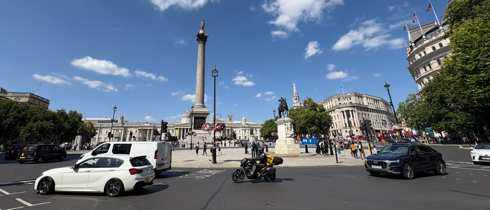

London
- City Infomation -
革新と伝統が融合する多文化国際都市
UK、及びイングランドの首都であるロンドンは世界有数の文化的かつ国際的な都市であり、年間約2,800万人の観光客が訪れる。
街の中心部にはテムズ川が流れており、それを囲うような形で街が形成される。
市内では約380の言語が話されており、とても多くの人種が生活している。
Spot's

Big Ben
ロンドン、そしてUKの象徴といえばビッグベンである。1859年に、テムズ川沿いのウェストミンスター寺院の近くに建設された。
高さ96メートルの時計塔からは独特の鐘の音が鳴り響き、一日に1秒たりとも時間を間違えることはない。
ビッグベンには奇跡的なエピソードがある。第二次世界大戦当時、ロンドンは大きな戦災に見舞われ、近くにあったウェストミンスター寺院が被災してしまった。
しかしビッグベンには大きな被害がなく、鐘は鳴り続けた。戦時下でもその大役を果たした時計塔は、英国のシンボルとして今も大切に使用されている。

City of London
ロンドンの南東部には巨大な金融街「シティ・オブ・ロンドン」があり、金融および専門サービスの中心地として機能しています。
ロンドンの名の由来は、紀元1世紀に古代ローマ人によって、ロンディニウムという城壁と集落が作られたことにある。
その中で「シティ・オブ・ロンドン」は、古代の遺産と現代の高層ビルが共存する、歴史と影響力のある金融街として発展した。この写真はセントポール大聖堂の屋上から撮影している。
Map
Photo Gallery